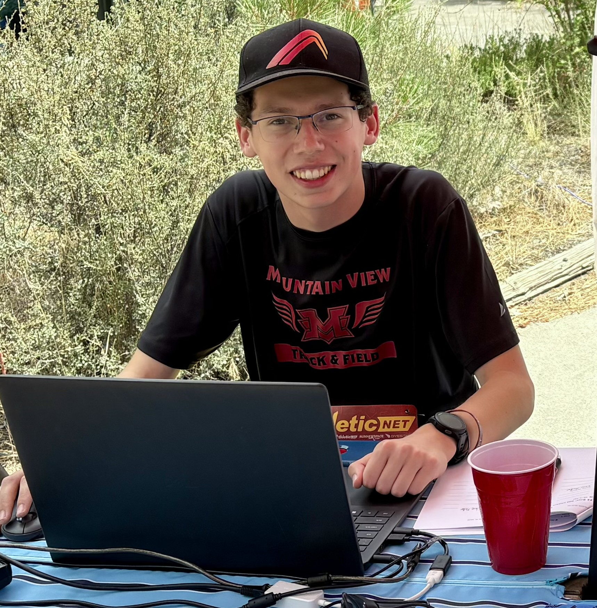

Brendan Medina
Head Timer & Head Developer
Favorite Event: XC 5000m
Base of Operations: Bend, OR / Pullman, WA
Brendan started timing track meets in his freshman year of high school. Since then, he has timed track and cross country, and developed an application for timing. He runs PhotoFinishPro Timing along with Kevin Mattox and Landon Martin. He's usually the one operating the photo review system and assigning times to athletes.
Head Timer at meets like MVHS All-Comers XC and Timer Training 3